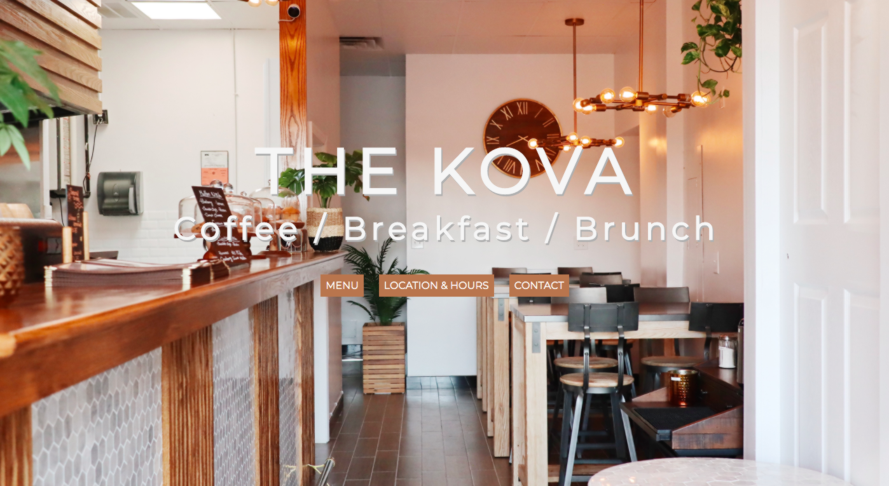
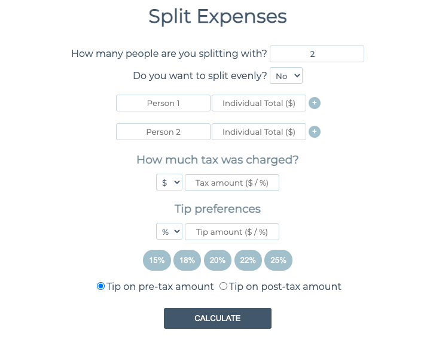

Home
Projects
Photography
LinkedIn
Featured Projects

01. The Kova
A website I built for a New York City restaurant, where I shot all the photography and created the menu, location, and contact sections.
View Project

02. Split Calculator
A web application designed to split expenses among a group.
View Project